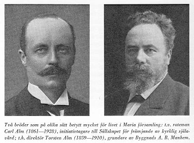

Södermalm i tid och rum. Stockholm
|
 Bröderna Alm, Torsten, som gjorde en storstilad, socialt ansvarsmedveten insats för att sanera bostadseländet på Västra Södermalm, och Carl, notarien, sedan rotemannen, som först tänkt att bli präst men tvingats avbryta studierna av hälsoskäl, har på olika sätt betytt mycket för livet på västra Södermalm. Carl Alm var religiöst starkt påverkad av sin morbror, den strängt inåtvände hovpredikanten C H Bergman. På Carl Alms initiativ tillkom Sällskapet för främjande av kyrklig själavård, vars verksamhet skulle komma att betyda mycket för att stimulera det religiösa livet i de folkrika stockholmsförsamlingarnas utkanter under 1890-talet och de närmast decennierna. Det var till stor del genom dess insats, som delningstanken i Maria församling så småningom mognade i stadier, som på sätt och vis rekapitulerade hela den föregående diskussionen: själavårdsdistrikt med egen präst, kapell, kyrka och till sist församlingsdelning. Sällskapet satte som sin närmaste uppgift att med hjälp av insamlade medel anställa hjälppräster i de största stockholmsförsamlingarna, och, där så behövdes, skapa enkla gudstjänstlokaler för deras verksamhet. Man ville också mera allmänt söka underhålla och utveckla det religiösa intresset i huvudstaden mot bakgrund av den rådande »kyrkliga nöden» - den antikyrkliga opposition, som låtit höra av sig på kyrkostämmorna i Maria, var ingalunda någon ensartad företeelse. Målsättningen var - som också betonades i Sällskapets slutliga namn - rent inomkyrklig utan någon sekteristisk anstrykning. Den tog främst sikte på den fattiga arbetarbefolkningen i de stora utkantsförsamlingarna, med vilken frikyrkorna tidigare haft den bästa kontakten. Bakom låg folkkyrkotanken. En viss inspiration kom efter starten från danskt håll, där liknande strävanden tidigare gjort sig gällande. Ändå måste förhållandet till de kyrkliga myndigheterna bli en ömtålig sak. På visst håll - det gällde särskilt kyrkoherde Heüman i Adolf Fredrik - krävdes bestämt, att verksamheten inordnades under den kyrkliga regimen, vilket ledde till en allvarlig kris inom Sällskapets ledning. I Maria blev stödet däremot helhjärtat, och prästerskapet där engagerade sig direkt i Sällskapets arbete. Då lokala församlingskretsar började organiseras 1898, kom den första till stånd i Maria församling med kyrkoherde Eklund själv som ordförande. En mycket aktiv insats gjordes under en följd av år av Sven Nilson, ordförande i mariakretsen 1900-1913 och i centralstyrelsen från 1903. Då Carl Alm drog sig tillbaka som sekreterare 1905, efterträddes han av Erik Lindeberg, en av Sällskapets första diakonpräster, som sedan blivit ordinarie i Maria. Flera gånger förlade Sällskapet sin årshögtid till Maria kyrka. Vid högtiden 1907 predikade J. A. Eklund i högmässan och Waldemar Rudin i aftonsången.
Som vägmärke för gatuvandraren var målat ett stort gotiskt kyrkfönster på en utskjutande brandgavel. Kyrkrummet, som med orgelläktaren rymde 250 sittplatser, hade åstadkommits, genom att trossbottnen avlägsnats mellan två våningar. Väggarna var vitmenade och fönstret bakom altaret försett med enkla glasmålningsimitationer för att skärma av utsikten mot det motsatta gatuhusets fönsterrader. Den enda mera värdefulla prydnaden var en stor marmorstaty av Thorvaldsens Kristus. Liturgiskt var kyrkorummet utformat enligt gängse svensk tradition med predikstolen till vänster på ena långväggen och altaret med en kraftigt utformad altarring i fonden. Ehuru aldrig invigd var Ansgariikyrkan verklig kyrka, icke bara predikolokal, då nattvardsfirande förekom här, första gången adventssöndagen 1899. För tillståndet, som getts med tanke på de sjuka och gamla, för vilka vägen var lång till Maria kyrka, men också - betecknande nog - av hänsyn till de fattiga, som drog sig för att visa sig i den stora kyrkan i sina slitna kläder, kände man stor tacksamhet mot Maria församlings kyrkoherde. Nattvardssilvret hade bekostats av den lilla menigheten själv: tre kollekter gav 127 kronor och 68 öre - i sitt slag en stor offergåva. Redan hösten 1898 hade Granqvist efterträtts av Erik Valdemar Lindeberg, som stod kvar som Ansgariikyrkans föreståndare i hela femton år. Som utkantspräst var han utmärkt lämpad. Till karakteristiken hör, både att han var Albert Engströms vän och en intresserad jägare. Som barn hade han varit en hurtig friluftspojke men sedan genom en svår sjukdom i femtonårsåldern riktats in åt det religiösa hållet. Rättframt ärlig, praktiskt inställd, något snar till vrede, kunde han ta enkla människor och predika, så att han blev förstådd av dem. Mot sentimental gudsnådelighet reagerade han instinktivt, fast hans religiositet var starkt pietistiskt färgad. Anna Alm minns några gudstjänster i Ansgariikyrkan från Lindebergs tidigare år. Var lokalen överfull - som den i regel var - skall det ha hänt, att prästen lämnade altaret och klev över småttingarna, som fått plats på altarringen, för att ordna stolar åt några senkomlingar - alla fann detta i sin ordning. Predikan gick rakt på sak och var ofta drastiskt åskådlig. Ett tallfrö mellan prästens fingrar fick länka in åhörarnas tankar på liknelsen om senapskornet. En annan gång kunde de få höra, att »vi visserligen äro kallade att vara jordens salt, men icke jordens peppar». Då det på ett tidigt stadium blev tal om att Lindeberg skulle flyttas till annan tjänst, kom en petition, undertecknad av ett stort antal församlingsbor, som med hänvisning till den verksamhet, som bedrivits genom Sällskapet för kyrklig själavård, hemställde, att en ny tjänst som pastorsadjunkt skulle inrättas med uppgift att tjänstgöra i den väster om Ringvägen belägna delen av församlingen. Ansgariikyrkans menighet bönföll också troskyldigt att få behålla sin avhållna själasörjare: »Som vi ha hört att det är på förslag, att Pastor Lindeberg skall förflyttas till annat distrikt få undertecknade på det varmaste och vänligaste bedja att ej så må ske. Därför att han har spridit glädje och velsignelse i många hjärtan och i många hem, ty här i denna utkant af maria församling finnes värkligen mycket synda mörker, men tack vare Pastor Lindeberg med sin alltid goda vilja har han här på denna trackt lagt ned mycket arbete, som troligen skulle bli om intet ifall han skulle tagas ifrån oss (med detta arbete mena vi menniskosjälars frälsning och räddning från en evig död). Därför få vi bedja på det innerligaste: låt oss få hafva vår Pastor Lindeberg qvar. Detta är vår första och sista hemställan.» Kyrkostämman biföll förslaget, fast några talade emot. Husägaren och f.d. riksdagsmannen Gustaf Ericsson, notorisk opponent på stämmorna vid denna tid, ansåg, att de flesta petitionärerna »icke vetat, vad de skrivit under, andra hava trott sig böra agitera för en viss prästman», och en annan talare deklarerade frankt, att han ansåg prästerskapets religiösa verksamhet »otidsenlig». Sedan beslutet sanktionerats av Kungl. Maj:t, som tidigare medgett en motsvarande tjänst i Jakob och Johannes, kunde Lindeberg kallas till innehavare av den nya adjunkturen 21 maj 1901. Året därpå kom en ny masspetition, som nu krävde en kapellbyggnad i västra delen; det framhölls, att framtiden för Ansgariikyrkan, som »under de senaste åren varit oss till stor glädje», var oviss, eftersom fastigheten låg i gamla gatulinjen och snart kunde hotas av rivning. Detta initiativ, som i själva verket blev upptakten till de mångåriga diskussioner och förberedelser, som i sinom tid ledde till byggandet av Högalidskyrkan, fick till närmaste resultat, att församlingen av Manhem förhyrde Ansgariikyrkan; följaktligen blev denna nu församlingens egen filialkyrka. Lindeberg stod kvar som präst där, tills han 1912 - i hård konkurrens med Olof Molin - fått komministraturen efter Sven Nilson, som blivit kyrkoherde i Solna. I Ansgariikyrkan efterträddes han av N. U. Nilsson, som därmed fick kontakt med Högalid, vars förste kyrkoherde han blev, sedan församlingen organiserats.
Också till tjänsten i Mariasalen tycks Sällskapet ha funnit de rätta männen. Den förste var Hjalmar Lyth, liksom Lindeberg väl lämpad som utkantspräst - det skadade icke att på denna post vara väl insatt i socialismens historia. Efterträdaren, Johan Lagerkranz, verksam här 1904-1911, kom närmast från en lärartjänst på Långholmen; som specialintresse hade han botanik och företog flera forskningsresor till Spetsbergen och Grönland. Sedan följde J. F. (Johansson) Bernander, som, när han kom till Mariasalen, hade nyttiga erfarenheter som utländsk sjömanspräst, efter två års interregnum Johannes Skoglund, sedan kyrkoherde i Äppelbo, och slutligen Augustinus Malmberg, som blev en av de första komministrarna i Högalid. I Ansgariikyrkan och Mariasalen hade den blivande Högalids församling sina rötter. Prästen vid Hornskroken och prästen vid Hornstull höll nära kontakt med varandra. Arbetet var av samma karaktär, mera personligt krävande än för prästerna i moderförsamlingen - fast hjälpprästerna var befriade från expeditionsgöromålen på pastorsexpeditionen - men kanske just därför särskilt tacksamt och alltid öppet för nya initiativ och insatser. Tyngdpunkten i uppgiften, som den formulerades av den förste prästen i Ansgariikyrkan, låg i »evangelii förkunnelse, söndagsskola, konfirmationsundervisning och framför allt besök i hemmen». Till Högalidskyrkans tioårsjubileum samlades några minnesglimtar från diakonpräster, som en gång verkat i den utkant, som blev församlingens David Granqvist, pioniären - död som prost i Söderala först 1959, nära 95 år gammal - tänkte särskilt gärna på hembesöken. I regel var prästen välkommen i de enkla arbetarhemmen, sedan man väl upptäckt, att han inte var en lärare, som kom med oroande budskap eller - ännu värre - en agent, som ville kräva förfallen likvid för något avbetalningsköp. God hjälp hade han av församlingsdiakonissan: att hälsa från syster Therese var »en nyckel till hjärtat». Lyth gladde sig åt ungdomsarbetet, som han fått vara med om att bygga upp, och initiativet tillsammans med Lindeberg att bereda sommarvistelse för klena barn med hjälp av den sedan allmänt kända apellen »Till Far och Mor i Sveriges lanthem». Lagerkranz ansåg åren som utkantspräst vara sina lyckligaste prästår och erinrade om tre gestalter, som betytt mycket för arbetet i Mariasalen: värdinnan med sin förmåga att skapa fest med enkla medel, den otroligt uppfinningsrika kassaförvaltaren och mariakretsens ledare komminister Sven Nilson, som »ägde kärlekens allvar och kärlekens höviskhet i alldeles ovanlig grad». Johannes Skoglunds minnesbilder har en mörkare ton i känsla av egen otillräcklighet inför den svåra uppgiften under krigets och spanska sjukans mörka år: »När jag gick gatorna i mitt stora kvarter mellan Varvsgatan och tullen och såg upp mot de höga och långa husraderna, tycktes det mig vara en hopplös och omöjlig uppgift att vara präst för alla människorna därinne.» På ett område, det kyrkliga ungdomsarbetet, gjorde diakonprästerna i Högalid en viktig pioniärinsats. Då frågan officiellt togs upp i Allmänna svenska prästföreningens första cirkulär 1904, hade Lindeberg redan gripit sig an med uppgiften. Ur hans möten med sina gamla konfirmander hade redan i mars samma år vuxit fram Ansgariikyrkans ungdomsförening, som satte till sitt mål att stödja och hjälpa dem, »som ville göra allvar av vad de vid konfirmationen lovat och bekänt». Man möttes först i Lindebergs hem, tills föreningen fick en egen lokal i Ansgariikyrkan, delad med Bibelkretsen, en sammanslutning av äldre för inre och yttre mission. För programmet vid mötena svarade ungdomarna själva; en egen tidning, U.F:s månadsblad, gavs ut 1909-1914. Av N. U. Nilsson, som byggde vidare på denna grund, bildades den sedan bekanta Tioöresföreningen. Mariasalens ungdomsförening fick sina stadgar i september 1905. På initiativ av Augustinus Malmberg kom också till stånd en pojkförening, sedan kallad Högalidspojkarna. Den höll till på Mariasalens vind, där det fanns anstalter för bokbinderi, pappslöjd och tältsömnad; i gåva fick man ett litet tryckeri, där pojkarna kunde trycka sin egen tidning. Den kyrkliga verksamheten i gamla Högalid omfattade också de välfärdsanstalter, som rymdes inom området. Rosenlunds ålderdomshem och Vårdhemmet Högalid hade utrustats med egna, rymliga kyrksalar. Borgarhemmet, tidigare egen kyrkoförsamling, först 30 september 1910 inlemmad i Maria församling, fick en liten vacker kyrka i flygeln till sin ståtliga nybyggnad. Anstalterna hade sedan gammalt sina egna präster, men från Lagerkranz tid förenades tjänsterna vid Ansgariikyrkan och Borgarhemmet. Ansgariikyrkans tid var ute, sedan fastigheten bytt ägare och kontraktet med församlingen sagts upp. Från den sista gudstjänsten den 25 september 1921, 18e söndagen efter trefaldighet, avsändes en hälsning till moderkyrkans församling å de gudstjänstfirandes vägnar: »Då vi idag samlats till den sista högmässogudstjänsten i den gamla Ansgariikyrkan fyllas våra hjärtan av tacksamhet för alla rika stunder, Gud har beskärt oss i detta enkla men för oss kärt vordna tempel, men också med vemod över att den mångförgrenade verksamhet, som här utövats, nu mister sitt hem. Med ivrig längtan motse vi den dag, då den nya kyrkan kan öppnas för en gudstjänstfirande menighet och då församlingslokaler kunna bjuda ett hem åt den kyrkliga verksamheten bland barn, ungdom och äldre uti den så folkrika västra delen av Maria församling.» Det var en sista önskan från menigheten i Ansgariikyrkan, att detta namn skulle överflyttas på den kyrka, som nu höll på att resas på Högalidsberget. Så blev det inte, men när Högalidskyrkan stod färdig och den nya församlingen organiserats, kunde dit överflyttas det rika församlingsliv, som tidigare utbildats kring Ansgariikyrkan och Mariasalen. Den fråga, som därmed fått en lycklig lösning, hade krävt många års förberedelse. Redan under 1800-talets sista år fanns intresse för att få till stånd en kyrka i västra delen av Maria församling. Häradsskrivaren E. L. Petersson föreslog kyrkostämman att lägga upp en byggnadsfond, men motionen avslogs - fast kyrkorådet funnit den »i och för sig synnerligen behjärtansvärd» - med hänsyn till församlingens skulder. Tanken togs då upp inom Sällskapet för kyrklig själavård, och en insamling startades på förslag av komminister Sven Nilson. Man använde sig bl.a. av tryckta kort med texten »Vill du vara med om att bygga en kyrka inom västra delen av Maria Magdalena Församling?» På korten, som var indelade i hundra rutor, fanns konturbilden av en kyrka med ett torn, krönt av en tupp: varje ruta, som skulle föreställa en tegelsten, kostade tio öre och torntuppen en krona. Några större summor gav inte insamlingen, men den bidrog i alla fall till att väcka intresse för saken. Vad som reellt förde frågan vidare och blev den egentliga upprinnelsen till Högalidskyrkans långa förhistoria, var den opinionsyttring från ett stort antal församlingsbor, som kom till stånd 1902 för att trygga verksamheten i den mera provisoriska Ansgariikyrkan: man önskade, att det skulle byggas »en enkel men lämplig kapellbyggnad inom västra delen av församlingen». På kyrkostämman yrkade en talare avslag med hänvisning till de redan höga skatterna och det trängande bostadsbehovet, men både prästerna i Sällskapet för kyrklig själavård och inflytelserika medlemmar av kyrkorådet, som Oscar Almgren och Johan Östberg, talade för saken. Stämman bemyndigade kyrkorådet att hos stadsfullmäktige anhålla om lämplig plats för kapellbyggnaden och att anskaffa ritningar och kostnadsförslag. Tomtfrågan drog ut på tiden. Först den 1 december 1905 beslöt fullmäktige att upplåta ett område på Högalidsberget vid korsningen av Högalids-, Lunda- och Lignagatorna, med skyldighet för församlingen att låta stadens byggnadsorgan granska ritningarna. Kyrkorådet tillsatte nu en kommitte, bestående av Eklund, Redtz och Östberg, för att »vidtaga nödiga åtgärder». Kommitten vände sig till arkitekterna K. Elmeus och G. Hermansson. Den senare var ett aktuellt namn inom den stockholmska kyrkoarkitekturen efter att ha ritat både Oscarskyrkan och Sofia kyrka, och valet är alltså lätt att förstå. Elmeus, som snart kom i förgrunden, var katarinabo - senare stor södervän och intresserad av stadsdelens historia - och hade nyligen segrat i en arkitekttävlan om Hedvig Eleonora folkskola. På sätt och vis autodidakt hade han fått sin praktiska utbildning i Tyskland, närmast hos professor Chr. Hehl, då en auktoritet inom tysk kyrkobyggnadskonst. Båda de av församlingen anlitade arkitekterna representerade en mera traditionell riktning inom byggnadskonsten. Ingenderas förslag ansåg sig kyrkorådet kunna godkänna i deras första skick utan begärde ändringar »avseende byggnadsstil m.m.». Hermansson tycks därmed ha fallit bort ur bilden. Hela frågan kom i ett nytt läge genom en motion till kyrkostämman 1906, bakom vilken bl.a. stod Carl Alm, vid den tiden mariabo. Här framhölls, att folkmängden i Maria nu var så stor, att församlingen sannolikt ganska snart bleve ålagd att uppföra en ny kyrka. Ju längre man dröjde, dess större skulle kostnaden bli. Man borde därför redan nu bygga en kyrka på den vackra tomt å platån mitt för Ansgariigatan, som sedan gammalt reserverats för detta ändamål. Kapellbyggandet kunde lämpligen överlåtas åt Sällskapet för kyrklig själavård, som redan hade en byggnadsfond på flera tusen kronor.
Kyrkostämman den 28 maj 1907, som hade att ta ställning till dessa förslag, blev en av de märkligaste i Maria församlings senare historia. Den hade föregåtts av en livlig agitation. Kyrksalen i det nya församlingshuset vid Sankt Paulsgatan var fylld till trängsel med ett starkt inslag av arbetarelement. Sedan diskussionen kommit i gång, visade det sig, att en ganska stark falang icke delade kyrkorådets mening om kyrkans placering. Handlanden Th. Göransson - han blev längre fram medlem av Högalidskyrkansbyggnadskommitte - ansåg, att det i hela staden knappast fanns någon mera lämplig och dominerande plats för en kyrkobyggnad än Ansgarieberget. Bakom Högalidskyrkan anade han planer på en tredelning av församlingen, något som av ekonomiska skäl vore oklokt att tänka sig. Den egentliga striden, som blev starkt klasspolitiskt infekterad, kom att stå för eller emot ny kyrka. Kraftiga instämmanden från det starkt arbetarbetonade auditoriet mötte de talare, som av olika, stundom något demagogiska skäl yrkade avslag - en av dem befanns senare vara obehörig, då han bodde och var skriven i Brännkyrka socken. Argumenten bemöttes från borgerligt håll i en vänlig men - som det förefaller - något förmyndaraktig ton. Oscar Almgren förklarade, att han hyste mycket stor aktning för den stora arbetarbefolkningen i Maria, »som alltid iakttagit ett mönstergillt uppförande», men ansåg, att arbetarna av aktning för andras övertygelse borde unna de religiösa tillräckliga och lämpliga gudstjänstlokaler. Kammarrättsrådet Östberg deklarerade i en replik, att de icke religiösa naturligtvis hade rätt att delta i stämman, eftersom de betalade skatt, men tillade - under livliga protester - »vi skatta olika och har därför graderad skala, och så måste det ju vara». Det finaste inlägget från de kyrkovänliga kom nog från kristendomslektorn vid Södra Latin A. F. Berglund, som beklagade, att lagstiftningen var sådan, att de antikristliga påtvingades kyrkobyggnader, som egentligen borde byggas på frivillighetens väg och icke till följd av kyrkostämmobeslut - en revolutionär tanke, som egentligen betydde skilsmässa mellan stat och kyrka. Voteringen drog ut i två timmar. För förslaget om en kyrka på Högalidsberget röstade 91 personer med sammanlagt 785 röster och mot 216 personer med 477 röster. Ett positivt beslut hade alltså säkrats tack vare den graderade skalan. Det är möjligt, att siffrorna icke alldeles riktigt speglar opinionen. Stämman fick aldrig välja mellan Ansgarieberget och Högalidsberget. Måhända hade - som senare gjordes gällande - en del anhängare av den förstnämnda platsen antingen röstat för avslag för att undvika en kyrka på Högalidsberget eller - och då sannolikt flera - för Högalidsprojektet för att över huvudtaget få till stånd en kyrka. I varje fall var beslutet om Högalidskyrkan nu fattat. Innan bygget sattes i gång, skulle gå ett helt decennium. Det föreföll ändå efter majstämman 1907 alldeles klart, att Elmeus kyrka om några år skulle resa sig på Högalidsberget. Den stockholmska kyrkoarkitekturen skulle i så fall fått ett tillskott av på visst sätt mycket originell art.
Fyra dagar senare kom stadens utlåtande. Det blev en kalldusch både för kyrkorådet och arkitekten. Placeringen i terrängen accepteras, men skarp kritik riktas mot den arkitektoniska utformningen: »Den framskjutna, för stadens skönhet betydelsefulla platsen kräver emellertid uppställandet av stora fordringar på kapellets utseende och anpassning, och i så måtto kan förslaget ej sägas vara tillfredsställande. Det smäckra tornet passar ej rätt väl för det höga läget och södra landets karaktär, där mera satta proportioner och mera fyllighet och lugn i konturen vore välgörande. Även över den rent kyrkliga delen av komplexet har en viss profan hållning blivit förhärskande, varförutom på ett ofördelaktigt sätt framträdande stilblandningar förekomma.» Förslaget underkändes alltså, och det krävdes »en mera harmoniskt genomtänkt arkitektonisk formgivning». Bakom den fräna kritiken stod i själva verket Överintendentsämbetet, vars smakdomar vid denna tid dikterades av Carl Möller och I. G. Clason, i detta fall närmast den senare. Det var också han, som bestämde frågans vidare utveckling. Efter en personlig kontakt ansåg sig Elmeus - med skäl eller ej - ha fått tillräckliga garantier för att kunna arbeta vidare på sitt projekt. Vid hemkomsten från Englandsresan grep han sig an med att utföra de äskade ändringarna. Först efter ett år kom de nya ritningarna tillbaka från Överintendentsämbetet, som inte heller nu var nöjt: tornet borde vara mycket större och kraftigare. Ett nytt projekt av arkitekten blev likaså underkänt. För Eklund och en av kyrkorådets medlemmar, som uppkallats till ämbetet, påvisade Clason förslagets brister »i konstnärligt och konstruktivt avseende» och rekommenderade arkitekttävlan.
Ärkebiskop Söderblom anknöt i högtidliga ord både till reformationens 400-årsjubileum och nödsituationen i världen samt tolkade innebörden av de två tornen, som han nu döpte efter Sveriges apostel och Sveriges evangelist: Ansgar och Olaus Petri. Oscar Montelius som kyrkorådets äldste ledamot lade ner kopparcylindern med grundläggningsdokument och sitt övriga traditionella innehåll, och som den förste i raden av närvarande notabiliteter markerade Kronprinsen de symboliska hammarslagen. Lämpliga invigningsord hade på förhand delats ut av ärkebiskopen utom till arkitekten, som själv fick välja sitt: »När tungan tystnat, tala stenarna!»
Namnfrågan hade mycket diskuterats. Menigheten i Ansgariikyrkan önskade, att den nya kyrkan skulle få överta detta namn, och i församlingen fanns stark resonans för förslaget. Då kyrkorådet tog upp frågan ett par dagar före grundstensinvigningen, nämndes utom detta namn Högalidskyrkan och Olaus Petrikyrkan. Det förra föll bort, sedan någon påpekat, att enligt vedertaget bruk i större städer kyrkor uppkallades efter personer och icke efter ställen. Oscar Montelius talade varmt för Olaus Petrikyrkan, som var hans förslag. Han ansåg bl.a., att smedssonen Olaus Petri namn skulle passa särskilt bra, då kyrkan låg i en trakt, »där hans faders yrke av mången utövas och där tanken på den ur det anspråkslösa hemmet utgångne store reformatorn och tecknaren av vårt lands historia kunde verka värmande och uppmuntrande». Tankegången verkar något hårddragen, och kyrkorådets majoritet bestämde sig också för Ansgariikyrkan. Omedelbart före invigningen ändrade man mening och enades i stället om namnet Högalidskyrkan. En formulering i invigningstalet gav anledning till ett litet missförstånd, som föranledde en deklaration från Söderblom, att han ansåg namnet Högalidskyrkan vara »både lämpligt och poetiskt».
Med kyrkans fullbordan aktualiserades frågan om församlingsdelningen. Då kyrkobygget beslöts på den stormiga majstämman 1907, hade också den frågan tagits upp i diskussionen men - säkerligen av taktiska skäl - skjutits åt sidan av dem, som framförallt var angelägna att få till stånd ett positivt beslut i huvudfrågan. I själva verket blev den talare sannspådd - det var Oscar Almgren - som förutsade, att delningen skulle bli verklighet först på 1920-talet. I det långa loppet kunde den inte hindras, även om församlingens majoritet satte sig emot. Sedan motsvarande fråga lösts för Hedvig Eleonora, Adolf Fredriks, Jakob och Johannes och Katarina församlingar, var Maria med över 50.000 personer den folkrikaste i huvudstaden och hela landet. Då en ny kyrka stod till förfogande, måste på kort sikt delningen bli en självklar sak.
Genom kungl. brevet den 20 juni 1924 föreskrevs, att Maria Magdalena församling från och med 1 januari 1925 skulle delas i två församlingar, Maria Magdalena och Högalids församlingar, som från och med den 1 maj samma år var för sig skulle utgöra ett pastorat. Gränsen drogs i huvudsak på det sätt, som föreslagits av 1918 års församlingskommitterade. Personalstaten skulle vara lika för båda församlingarna med kyrkoherde, två komministrar och en ständig adjunkt. Maria församlings särskilda privilegium i fråga om prästval överfördes till att även gälla Högalid. Av den odelade församlingens tillgångar skulle ett belopp av 500.000 kronor - redan avsatt för ändamålet - tilläggas Högalids församling för uppförande av församlingshus. Önskemålet om folkskolan tillmötesgicks på så sätt, att denna, ehuru belägen i Högalids församling, skulle tillhöra Maria Magdalena.
|